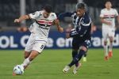
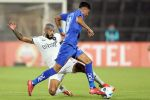
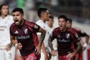

| Aqui está o seu resumo da Copa CONMEBOL Libertadores | |
|---|---|
Confira o melhor desta primeira rodada:Resultados dos jogos de terça-feira, 2 de abril |
|
|

São Paulo estreia na Libertadores com vitória por 1 a 0 sobre o Talleres na ArgentinaO gol decisivo foi marcado pelo volante Alisson aos 30 minutos do segundo tempo, aproveitando um cruzamento de Cédric e uma defesa incompleta do goleiro adversário. Postado há 25m. |
|
|

Botafogo estreia com derrota por 1 a 0 para a Universidad de Chile na LibertadoresApesar de ter maior posse de bola, o atual campeão da competição encontrou dificuldades para superar a defesa bem organizada do time chileno. Postado há 25m. |
|
|

River Plate estreia com vitória por 1 a 0 sobre o Universitario na Libertadores 2025O único gol da partida foi marcado pelo defensor chileno Paulo Díaz no primeiro tempo, aproveitando uma cobrança de escanteio mal defendida pela equipe peruana. Postado há 25m. |
|
| Confira todos os resumos e resultados no Blog da ESPN | |